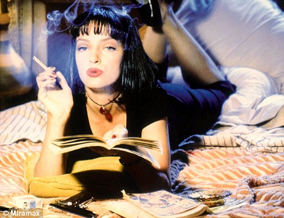
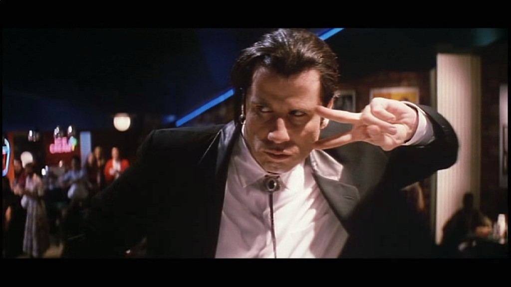
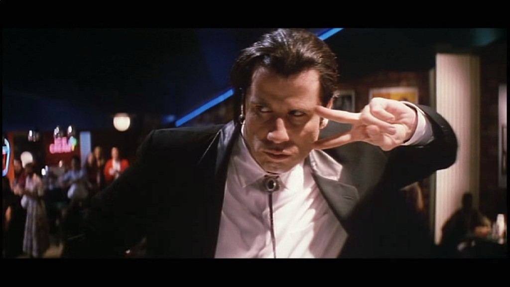

Tarantino and Independent Cinema
Pulp Fiction, great film
On the evening of September 23rd, 1994, Quentin Tarantino's Pulp Fiction had its hotly anticipated North American premiere at the opening night gala of the New York Film Festival, at the Lincoln Center on the Upper West Side.
It was the film's first screening since its world premiere that May at Cannes, where it took home the Palme d'Or, the festival's top prize, and expectations could hardly have been higher. In short the crowd was prepared not so much for a film as for an event—and they got one, though perhaps not the one they'd imagined.
Jason Bailey, author of the book Pulp Fiction: The Complete Story of Quentin Tarantino's Masterpiece, sets the scene like this:
Everything's tip-top; the audience is laughing and applauding and eating up the festival's most-buzzed selection. Mia Wallace is laid out on Lance's floor, her host and her date arguing over who will administer a shot of adrenaline to her heart. Vincent Vega raises the syringe, Lance counts to three . . . and a man down front keels over, in a dead faint.
 
